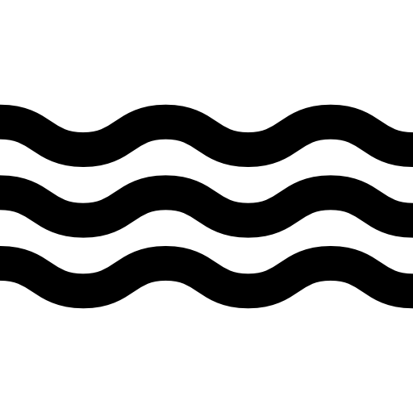
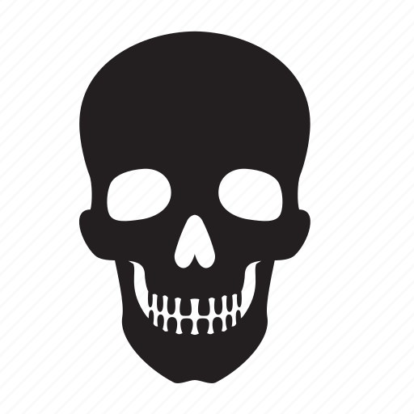

Cartes
- À la fin de votre tour, vous devrez n'avoir que 2 cartes maximum en main. Défaussez le surplus.
- Les cartes ne peuvent être défaussées que pendant votre tour.
- Les et les ont une valeur en , symbolisé par
- Les et les peuvent être gardés en main plutôt que joués directement.
- Les , Consommables et peuvent avoir des effets actifs et passifs une fois jouées.
- Les actifs sont symbolisés par
- Les actifs ne peuvent être exécutés que lors de vos phases d'action, sauf exceptions.
- Les actifs ne peuvent être utilisés qu'une fois par tour, sauf exceptions.
- Les passifs sont symbolisés par

- Les passifs peuvent avoir une condition de déclenchement.
- Exemple : lorsque vous piochez un
- Si cette condition n'est pas décrite, alors le passif s'applique en continu.
Personnage
- Les Personnages sont répartis sur deux axes : Moralité et Ordre.
- Moralité : Bon - Neutre - Mauvais
- Ordre : Loyal - Neutre  - Chaotique

- Certaines Cartes peuvent interagir avec ces axes.
- Exemple : tous les Bons sont soignés d'une .
- Le compteur de désigne la capacité maximale à prendre des dégâts.
- Lorsque vous parvenez à votre nombre maximal de , vous déplacez votre jeton sur l'emplacement Seuil de la Mort (abrégé en ou ).
Seuil de la Mort
- Lorsqu'un Personnage est au :
- S'il subit une , il confie son jeton de pupitre au joueur responsable de la blessure reçue.
- S'il n'a plus son jeton de pupitre le designant, il ne se passe rien.
- Il ne peut pas attaquer d'autres Personnages.
- Pour quitter le , il lui suffit de se soigner d'une .
- Une reçue au ne modifie pas votre nombre de actuelles.
- Si une Carte doit interagir avec la blessure infligée, elle le fait normalement.
Révélation du Personnage
- Tant qu'un Personnage est face cachée, il ne peut pas bénéficier de ses passifs ni de ses actifs.
- Attaquer un autre Personnage ne fait pas réveler votre Personnage ni le sien.
- Vous pouvez révéler votre Personnage à tout moment, vous ne pourrez plus le remettre face cachée.
- Lorsqu'il atteint , le Personnage doit se révéler.
- Vous ne pouvez équiper un que durant votre tour.
- Vous ne pouvez avoir qu'un équipé sur chaque emplacement.
- Un ne peut être équipé que sur les emplacements indiqués sur sa carte.
- Les ont plusieurs rangs de rareté : Commun, Rare, Épique et Légendaire.
- Lorsque vous piochez un Légendaire, vous devrez l'équiper ou le défausser à la fin de votre tour.
- Vous ne pouvez avoir qu'un seul Légendaire équipé à la fois.
- Pour bénéficier de ses actifs et passifs, le doit être équipé.
- Lorsqu'un est joué, il doit être défaussé une fois que son effet est expiré.
- Par exemple : un avec un effet immédiat tel que soigner une sera défaussé après utilisation.
- Au contraire pour un effet qui durerait pendant plusieurs tours, le serait mis sur l'emplacement effet du pupitre du joueur affecté et ne sera défaussé qu'après l'expiration de l'effet.
- Lorsqu'un est pioché, il doit être joué immédiatement.
- À l'instar des Consommables, le n'est défaussé qu'une fois son effet expiré.